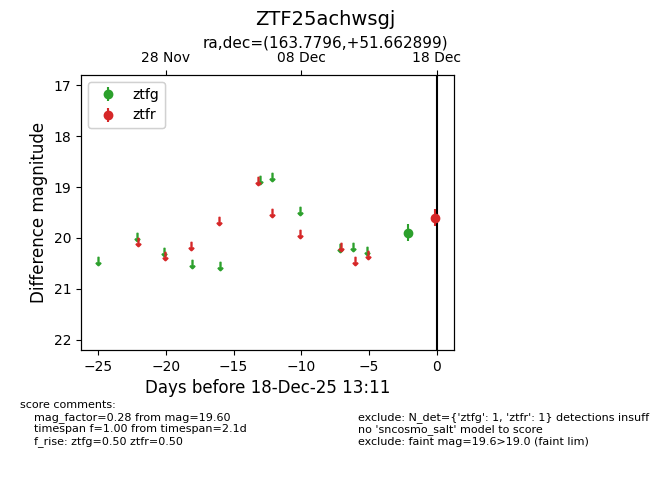
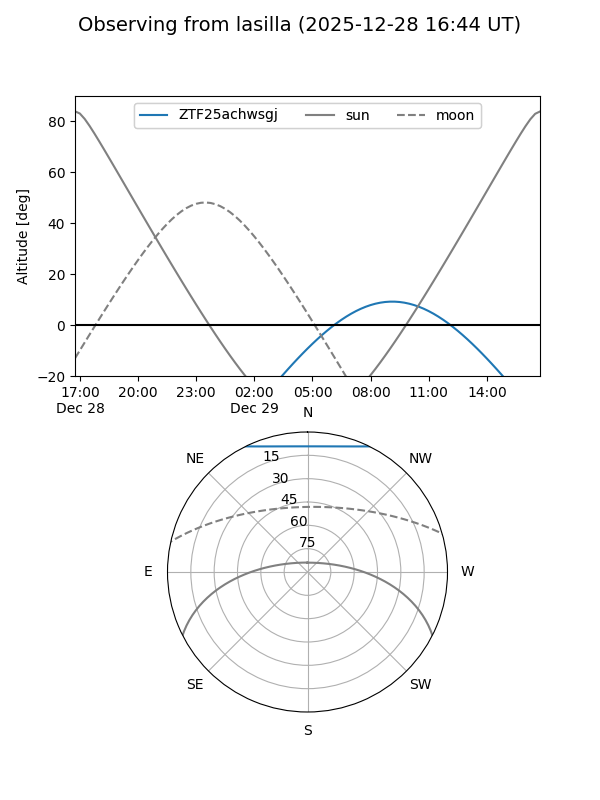
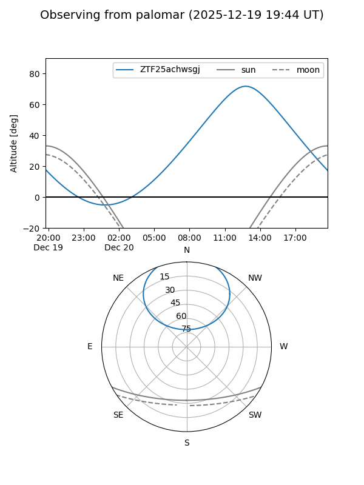
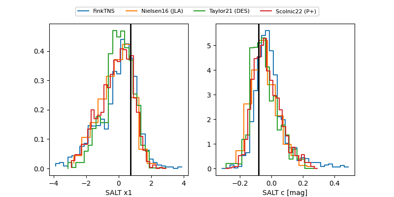

ZTF25achwsgj
Target ZTF25achwsgj at 2025-12-21 11:27
Aliases and brokers:
FINK: fink-portal.org/ZTF25achwsgj
Lasair: lasair-ztf.lsst.ac.uk/objects/ZTF25achwsgj
ALeRCE: alerce.online/object/ZTF25achwsgj
alt names
ZTF25achwsgj (ztf,fink_ztf)
Coordinates:
equatorial (ra, dec) = 163.7796,+51.66290
equatorial (HMS+DMS) = 10:55:07.10,+51:39:46.44
galactic (l, b) = (156.6992,+57.15287)
Flags:
Photometry:
last ztfg=19.05, ztfr=19.39
5 ztfg, 3 ztfr detections
Lightcurve

Visibility


Additional plots
